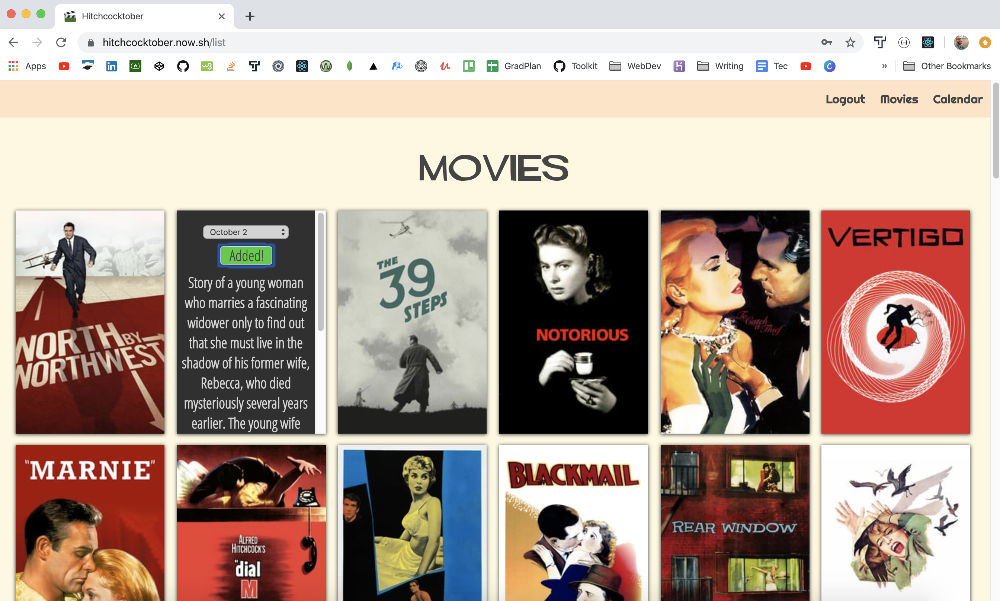
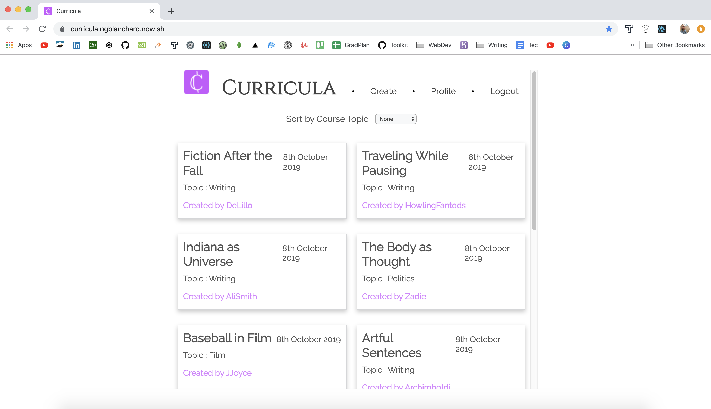

Nathan Blanchard

I'm a full-stack web developer from Frederick, Maryland. I believe user experience is ultimately narrative-based, so I create full-stack JavaScript apps that are anchored in the story of an organization or business. I craft clean code and user-friendly interfaces with front-end and back-end technologies. Recently, I've enjoyed
Projects
Hitchcocktober
 Live / Client Repo / Server Repo(React/Node/Express/PostgreSql)
Every October, use this app to celebrate the films of Alfred Hitchcock. Browse a list of the movies he directed, and schedule them across your own personalized month.
Curricula
 Live / Client Repo / Server Repo(React/Node/Express/PostgreSql)
Curricula is a tool for educators and instructors who wish to exchange ideas for courses, lessons, and curriculum outlines.